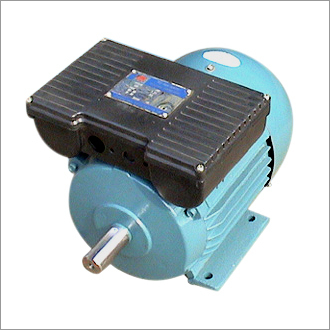
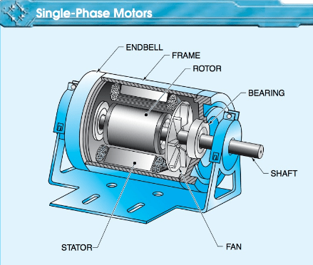

1. Core Definition
"An electric motor is an electrical machine that converts electrical energy into mechanical energy."

2. The Self-Start Mystery (बड़ा इंटरव्यू सवाल)
Bhai, ek baat dimag me bitha lo: Single phase induction motors self-start nahi hotin! Agar tum pankhe ko bina capacitor ke direct supply doge, toh wo sirf humming sound (गूंजने की आवाज) karega par ghoom nahi payega.
Aisa kyu hota hai?
Chunki single phase supply stator windings me Rotating Magnetic Field (RMF) paida nahi karti, balki ek **Alternating/Pulsating Magnetic Field** paida karti hai. Is pulsating field ke karan rotor par net starting torque hamesha **Zero (0)** ho jata hai. Ise Double Revolving Field Theory kehte hain, jise niche dynamic engine me dekho:
3. Single Phase Motor Types Classification
Pulsating field ko rotating banane ke liye hum stator slots me do windings lagate hain: **Main Winding** aur **Auxiliary (Starting) Winding**. Inke beech phase split karne ke alag-alag tariko ke base par yeh divide hoti hain:

4. Deep Internal Component Breakdowns
Starting Torque: Medium
Uses: Fan, Grinder, Small Pump
Starting Torque: High
Uses: Air Compressor, Water Pump
Performance: Best Running Performance
Uses: Ceiling Fan, Exhaust Fan
Starting Torque: Very High
Uses: Heavy Machines, Industrial loads
Torque: Very Low Torque
Uses: Small Fan, Hair Dryer, Toys
Speed: Extremely High Speed
Uses: Mixer Grinder, Vacuum Cleaner, Drill Machine